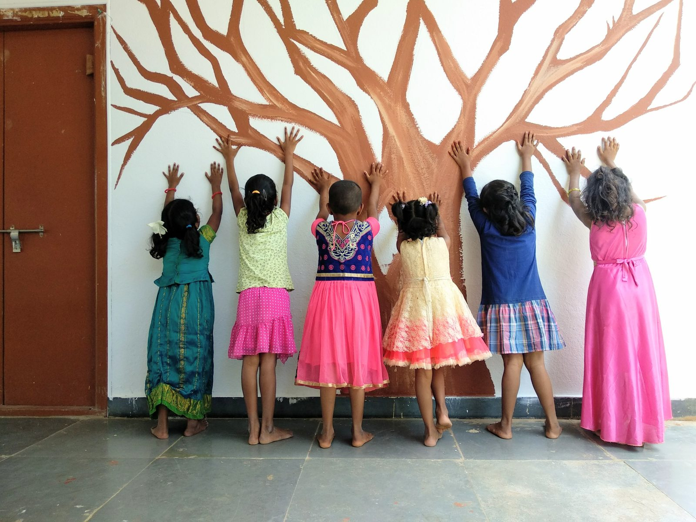

Aarti for Girls
Helping Girls Help Themselves.
We give abandoned and at-risk girls care, an education, and a real start. What they do with it tends to change the places they came from.
What's New
See more →Aarti at a glance
Aarti School
Learn more →Our Impact
Since 1992
Children since 1992
Education programs
& Empowered
Our Founding Story
Aarti began in 1992, when Sandhya Puchalapalli found a two-year-old girl abandoned on the roadside in Kadapa. Her father had killed her mother and left her there. Sandhya took her home. That girl is a healthcare professional today, with a career of her own.
What became clear over the years that followed was that behind an abandoned girl there is usually a mother in trouble. So we stopped treating the two as separate problems.
That now means three things running alongside each other: a home for girls who have nowhere else to go, schooling for children who would otherwise miss out, and support for their mothers. The part we are proudest of is the alumni. They have careers and families of their own now, and a good many of them still come back.
Read Our Story
In the Spotlight